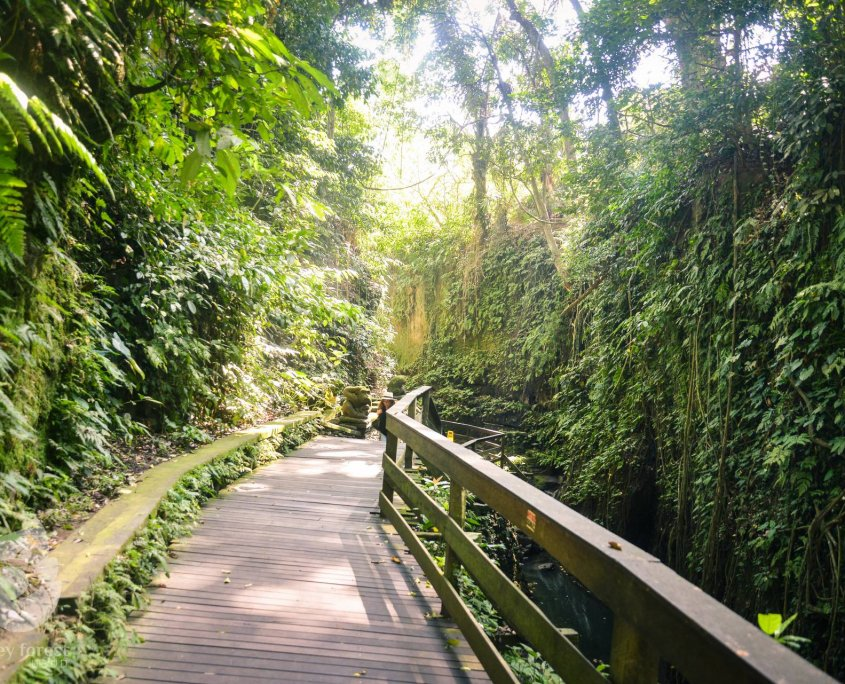

Research and Conservation
The Sacred Monkey Forest Sanctuary (Monkey Forest Ubud) is not just a tourist attractions or important component in the spiritual and economic life of the local community, but also an important spot for research and conservation programs.
The special management and arrangement that have been done in this area encouraged researchers from various research institutions around the world to conduct a research, particularly on the monkey’s social interaction and behavior with their surrounding environment.
